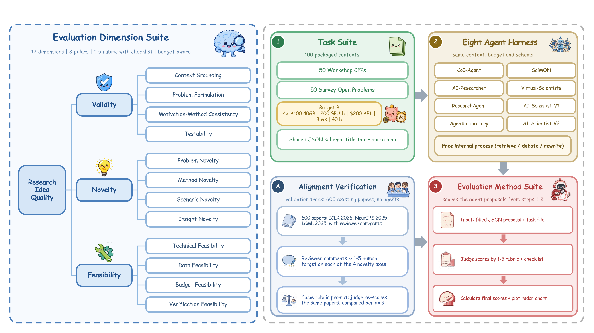
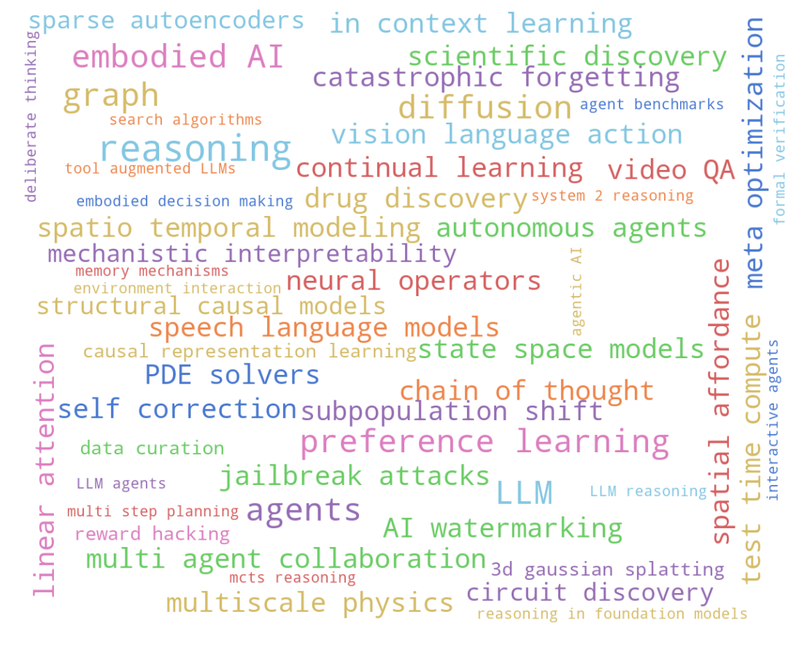
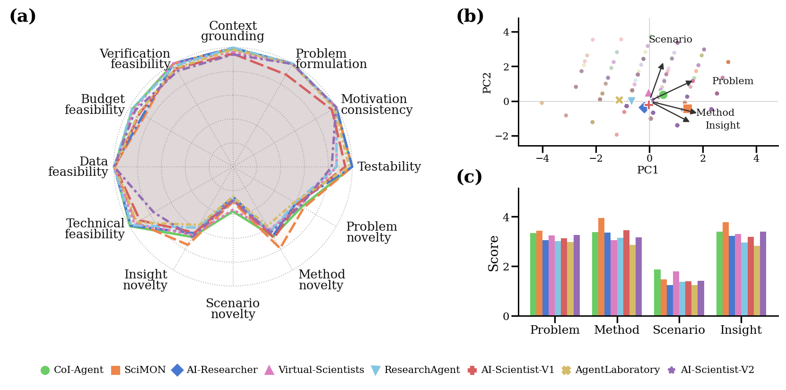
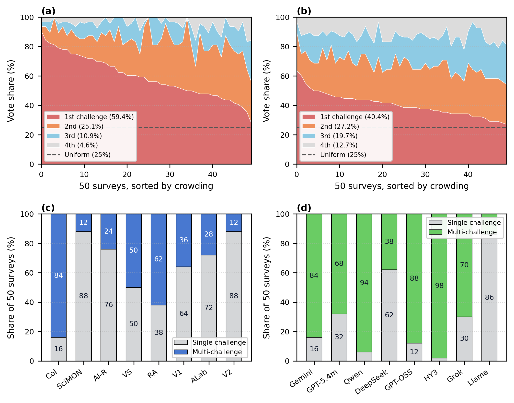
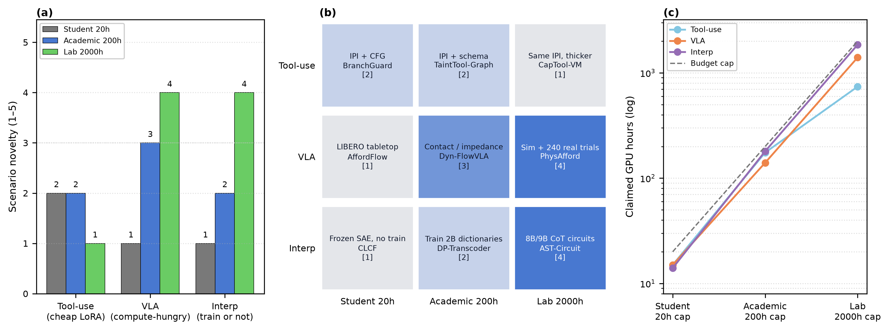
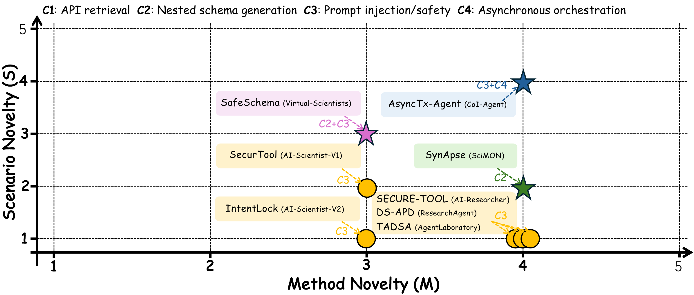

50 workshop CFPs + 50 survey open problems
validity · novelty · feasibility
used to validate the judge
8 backbones under one harness
Abstract
Research ideas are always proposed under resource constraints: a plan must fit the available compute, API credit, and time. Yet evaluations of research-ideation agents mostly score unconstrained novelty or overlap with a published paper, and their LLM judges are rarely checked against peer review.
We introduce AlphaIdeaBench, a benchmark of 100 ideation tasks, each paired with an explicit resource budget and a shared proposal schema. An LLM judge scores each proposal on 12 dimensions. To validate the judge, we compare its scores on four novelty axes (problem, method, scenario, insight) with scores derived from reviewer comments on 600 papers. We evaluate eight published harnesses on a shared backbone and, within one harness, eight backbone LLMs.
The backbone largely determines which open problem a proposal targets, whereas the harness determines whether a proposal addresses one problem or combines several. All harnesses score low on scenario novelty. When only the budget is varied, a larger budget changes the experimental setting on compute-intensive topics but only adds tests on an inexpensive one.
The benchmark
Every harness gets the same context, the same resource envelope, and the same output schema. Only the final written proposal is scored. (Click any figure to zoom.)

📚 Two routes to an idea
50 workshop calls for papers (NeurIPS / ICML / ICLR, 2023–25) keep the question partly open; 50 surveys supply author-stated open problems.
💰 Explicit resource envelope
Feasibility is scored against a stated budget B = ⟨GPU, API, calendar, human hours⟩, which the agent and the judge both see.
🧾 One JSON schema
Internal retrieval, debate or rewrite loops are free; only the returned JSON is judged.
Twelve dimensions, three pillars
Context grounding · Problem formulation · Motivation–method consistency · Testability
Problem · Method · Scenario · Insight — four separate axes, not one overall label
Technical · Data · Budget · Verification, checked against the declared envelope
Each dimension is scored 1–5 with a public descriptor and checklist. A proposal cannot offset hallucinated grounding with algorithmic novelty, nor bypass resource bounds with an ambitious formulation.
Resource envelopes
| Setting | GPUs | GPU-hours | API credit | Calendar | Annotation |
|---|---|---|---|---|---|
| Student | 1 × A100 | 20 | $20 | 2 weeks | 8 h |
| Academic (main study) | 4 × A100 40GB | 200 | $200 | 8 weeks | 40 h |
| Lab | 8 × A100 | 2000 | $2000 | 16 weeks | 80 h |
Task distribution

Is the judge trustworthy?
Before reading any agent score, we check the four novelty axes against reviewer text from 600 papers (200 each from ICLR 2026, NeurIPS 2025, ICML 2025, stratified to each venue's score mix).
(best NovBench zero-shot: 71.6%)
Dashed line = 90%. A second judge (GPT-5 mini) re-scores all agent writes as a stability check; the harness ranking holds (Spearman ρ = 0.81).
Results
Overall = unweighted mean of the 12 dimension means (1–5). Switch the chart view, toggle systems in the radar, and compare both tables below.
Click a name to show or hide it. Center = 1, outer ring = 5.
Table 1 · Eight harnesses, shared Gemini 3.7 Flash backbone
Table 2 · CoI-Agent harness, eight ideation backbones
Both tables: mean score (1–5) over the 100 tasks, judged by Gemini 3.7 Flash. Bold = best in row; shading deepens with score.

Key findings
With a strong backbone, harness rank is a novelty rank
Validity and feasibility sit near the ceiling for all eight harnesses (overall 4.02–4.31). CoI-Agent is best overall (4.31), narrowly ahead of SciMON (4.29), which leads method (3.95) and insight (3.78) novelty through inspiration collision.
Scenario novelty is the shared blind spot
No harness exceeds 1.87 on scenario novelty. Systems rarely change the problem setting; they mostly re-solve the stated one.
The backbone picks the problem; the harness picks the strategy
On the 50 surveys, eight harnesses sharing one backbone pile 59.4% of votes on the locally majority challenge. Swapping the backbone under CoI-Agent spreads that mass (40.4%). Meanwhile CoI-Agent fuses several challenges on 84% of surveys, whereas SciMON and AI-Scientist-V2 stay on a single one on 88%.
Weak models cannot execute the harness
Swapping only the backbone drops CoI-Agent from 4.31 to 1.84 (Llama 4 Scout). Llama 4 Scout fails literature grounding (1.95) and the budget (2.80), and collapses to a single challenge on 86% of surveys despite an explicit multi-challenge scaffold.

Each survey lists several open problems ("challenges"). For every proposal we record which listed challenge(s) it writes about. Top row asks which challenge gets picked; bottom row asks how many are combined.
Crowding. Each x position is one survey. For that survey we pool the writes (8 harnesses in a, 8 models in b), rank its challenges by votes, and stack the vote shares: red = most-voted challenge, orange = 2nd, blue = 3rd, grey = 4th. Surveys are sorted from most to least crowded. A big red band means everyone writes about the same problem.
(a) Changing the harness barely helps: red still holds 59.4% and the 4th challenge only 4.6%. (b) Changing the model spreads the votes: red drops to 40.4% and the 4th challenge rises to 12.7%. → The backbone decides which problem gets picked.
Single vs. fused. Each bar is one system over the 50 surveys. Grey = share of surveys where its proposal stays on a single challenge; blue/green = share where it combines two or more. Abbreviations: Col = CoI-Agent, AI-R = AI-Researcher, VS = Virtual-Scientists, RA = ResearchAgent, V1/V2 = AI-Scientist-V1/V2, ALab = AgentLaboratory.
(c) With one backbone, harnesses differ sharply: CoI-Agent fuses on 84% of surveys, SciMON and AI-Scientist-V2 stay single on 88%. (d) Keeping CoI-Agent, most backbones still fuse (88–98%), but Llama 4 Scout stays single on 86%. → The harness decides one problem vs. several, if the model can follow it.
What does more budget buy?
Holding CoI-Agent and the judge fixed, we replace the whole envelope on three surveys that differ in cost: tool use, vision-language-action, and mechanistic interpretability.
LIBERO tabletop in simulation → contact & impedance → simulation plus 240 real-robot trials. The world changes. (1400 / 2000 GPU-h at lab cap)
Frozen sparse autoencoders → 2B dictionaries → 8B/9B chain-of-thought circuits. The trained object scales. (1850 / 2000 GPU-h)
Stays in prompt injection plus public benchmarks. More tests, same world. (only 740 / 2000 GPU-h)

Case study: one task, eight proposals
survey_19 — agentic tool use, four listed challenges: C1 API retrieval, C2 nested schema generation, C3 prompt injection / safety, C4 asynchronous orchestration.

Limitations
The 100 tasks are drawn from machine learning, so findings on challenge crowding and scenario ceilings may behave differently in wet-lab fields where experiments cannot be simulated. The comparison separates backbone priors from search policies across eight harnesses, but it is not an exhaustive model zoo, and newer models may change the rankings.
Resources
Everything needed to compare a new agent under the same envelope and the same judge is released.
50 workshop + 50 survey contexts, each with the shared budget and schema.
12 dimensions with 1–5 descriptors and judge checklists.
Four novelty axes for 600 ICLR / NeurIPS / ICML papers.
Evaluation and execution code for reproducing every table.
Citation
@misc{zhou2026alphaideabench,
title = {AlphaIdeaBench: Benchmarking Automated Research Idea Generation
under Feasibility Constraints with Peer Review Alignment},
author = {Zhou, Shunchao and Yang, Chang and Wang, Jingrui and Zhuang, Shuxin
and Wang, Rundong and Yu, Runsheng and Wang, Xinrun},
year = {2026},
eprint = {2610.33644},
archivePrefix = {arXiv},
url = {https://arxiv.org/abs/2610.33644}
}Contact: xrwang@smu.edu.sg (corresponding author) · sc.zhou.2025@phdcs.smu.edu.sg